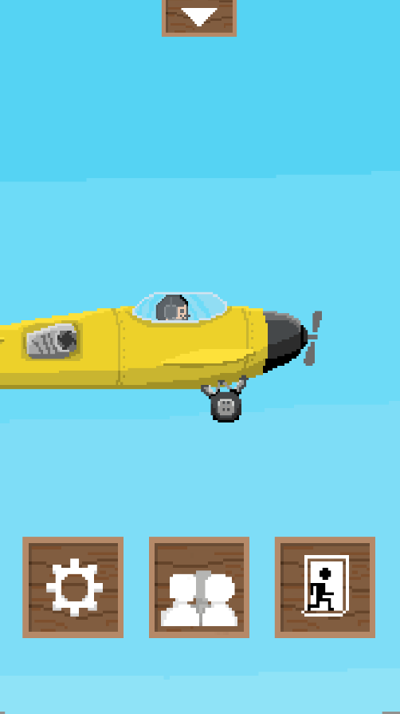
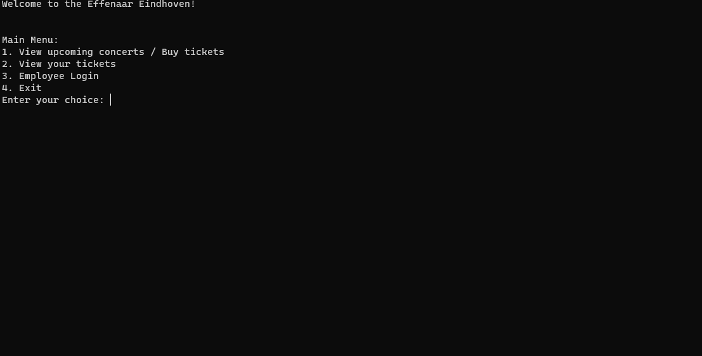
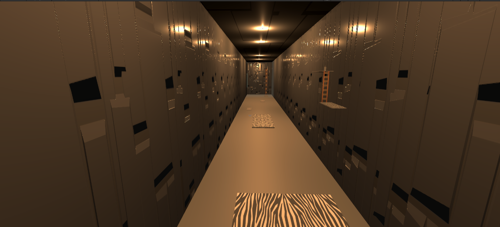

Cube shooter

Cube shooter is a game in which you shoot blocks coming towards you.
I made this project all by myself with from time to time some help from a teacher.
I made this game as my first ever experience with unity to learn game development while making a game that could get me accepted into the Sint Lucas College.
I used cs files to program all the mechanics of the game and made the game itself in unity.
Vamprush

vamprush was een samenwerkingsproject samen met de ddm'ers van onze school. ik heb in dit project het audiosysteem, de platformen die kapot kunnen, het scoresysteem en de credits gemaakt. ik heb ook meegewerkt aan andere stukken code die niet in de daadwerkelijke game zit.
goldfish dreams

goldfish dreams was deel van een gamejam. ik heb hierin het audiosysteem gemaakt en heel veel getest terwijl de mensen met wie ik samenwerkte de bugs eruit haalde.
autofire cubes

autofire cubes is een development opdracht om een 2d platformer te maken. ik heb deze opdracht aangepast naar een 2d game waarin je vijanden moet neerschieten om door te gaan naar de finish.
effenaar

effenaar was een schoolopdracht om te tonen dat we een applicatie kunnen maken in een cs bestand.
monopoly
monopoly is een project dat nog niet af is maar ik nu al wel een tijdje mee bezig ben om te maken. het is voor mij een persoonlijk project omdat niemand ooit mee wil doen, want monopoly duurt altijd uren. 
escape was een schoolopdracht om te tonen dat we een 3d game kunnen maken. van dit project heb ik alles zelf gemaakt op de audio na. van assets tot code. alles is mijn eigen en het werkt ook allemaal.